Première application Web en Java et manipulation des Servlets.
Important : cet exercice n'est pas à reproduire dans un projet réel, il est en l'état absolument pas sécurisé.
Récupérez la version de Tomcat qui vous concerne sur Apache Tomcat
Installez en suivant les instructions (cas du exe) ou dé zippez l'archive où vous voulez.
Vérifiez que vous avez bien une variable système JAVA_HOME qui pointe vers votre JDK. (ex: JAVA_HOME=C:\Program Files\Java\jdk1.8.0_121).
Remarque : pour le moment, il n'est pas conseillé de faire usage de Java 9 pour des problèmes de compatibilité avec Maven.
Dans le cas d'une utilisation avec Eclipse, l'installation s'arrêtera là, sinon vous pouvez faire un premier lancement en exécutant le scripte [TOMCAT_HOME]/bin/startup.bat(.sh), puis lancer votre navigateur sur http://localhost:8080
Allez dans le menu Window/Preferences, puis tapez encoding dans le filtre en haut à gauche.
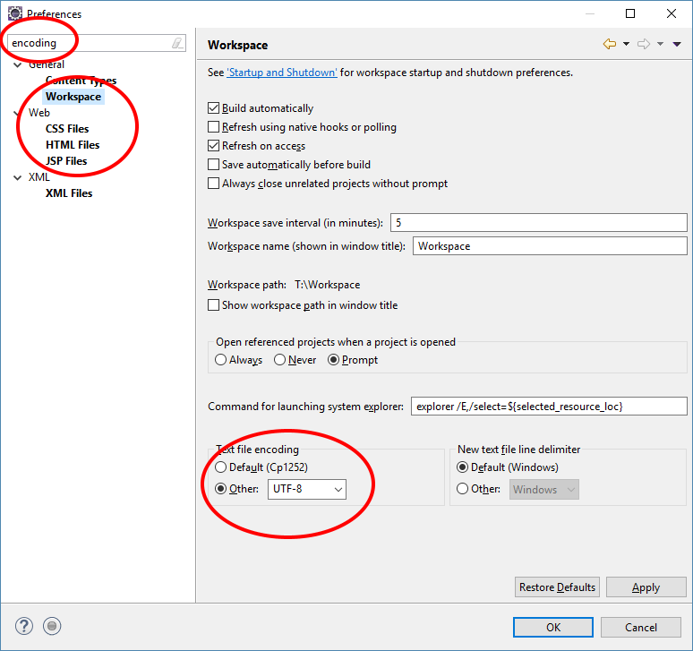Si vous n'êtes pas en UTF-8, placez-vous en UTF-8 pour Workspace, CSS, HTML et JSP.
Faites Apply (en bas à droite), puis effacez votre filtre (encoding), allez sur Java/Installed JREs
Vérifiez que vous pointez bien sur un JDK et pas un JRE. Le cas échéant modifiez votre chemin afin de pointer vers un JDK.
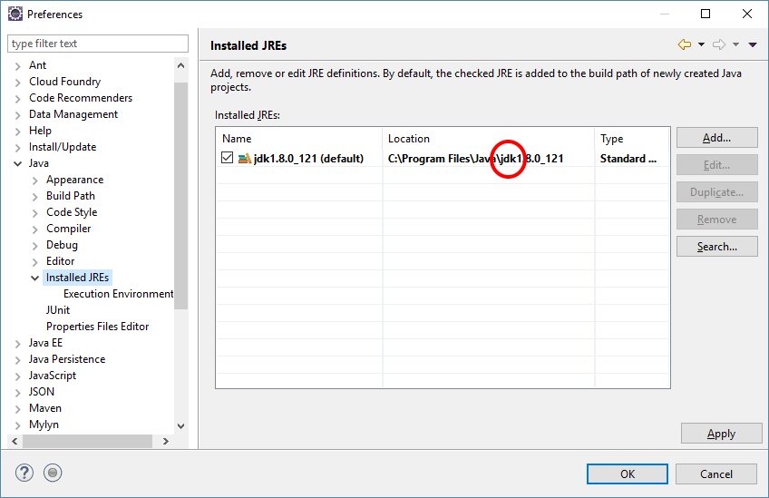N'oubliez pas de faire Apply.
Il faut maintenant indiquer à Eclipse où se trouve votre Tomcat. Notez que Eclipse supporte plusieurs versions de serveurs JEE, vous pouvez en utiliser autant que vous voulez sans problème.
Allez dans le menu Window/Preferences, puis l'onglet Server/Runtime Environement
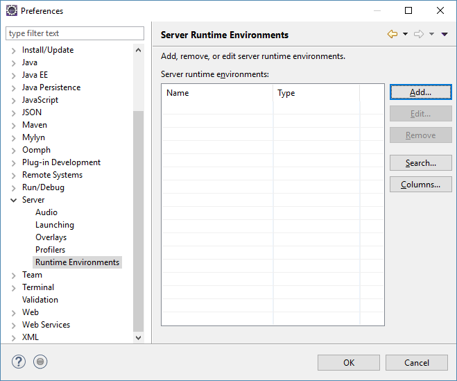Cliquez sur le bouton Add....
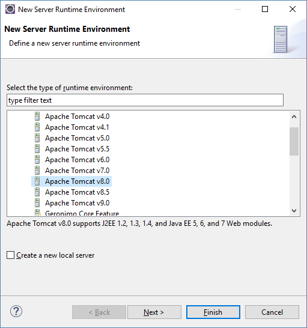Sélectionnez la version de votre Tomcat, faites suivant
Indiquez un nom, ainsi que le chemin d'installation de votre Tomcat. Ne changez pas le Name choisit par Eclipse.
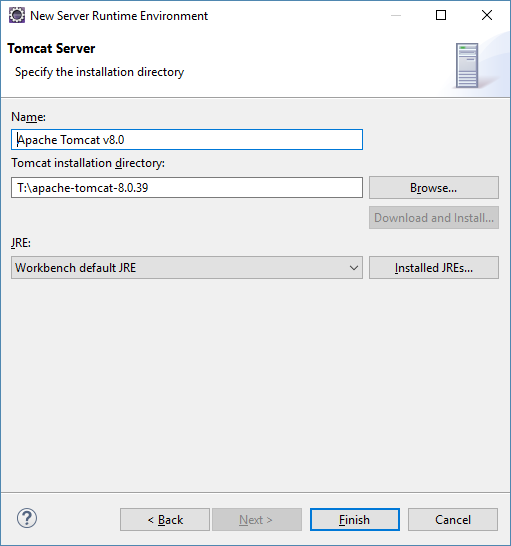Si vous le désirez, vous pouvez indiquer une version de machine virtuelle à utiliser pour lancer votre Tomcat.
Faites Finish.
Remarque : vous pouvez faire usage d'un Tomcat 8.5 si vous le souhaitez. Vous ne pourrez pas faire du Tomcat < 8 (nous sommes en JEE 3.1).
Installez une base MySQL sur votre ordinateur, téléchargez MySQL sur http://dev.mysql.com/downloads/
Lors de l'installation, notez bien le mot de passe que vous aurez choisi pour l'utilisateur root.
Lancez l'utilitaire Workbench et importez la base qui se trouve dans le dosser db de l'exercice, fichier banque.sql.
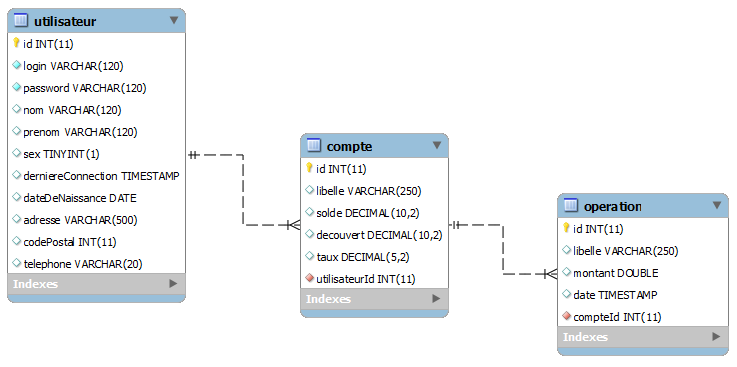La base se compose de trois tables, un utilisateur peut posséder des comptes. Un compte n'appartient qu'a un seul utilisateur. Les comptes peuvent générer des opérations. Une opération n'est liée qu'a un seul compte.
L'outil Maven permet de paramétrer un projet de manière neutre (c.a.d qui n'est pas associé à un outil de développement spécifique).
Les projets de cette formation sont réalisés en Maven afin de vous familiariser avec cette technique qui est la plus répandue actuellement.
Toutes les librairies qui seront nécessaires à nos projets seront automatiquement téléchargées d'internet grâce à Maven.
Toutes les informations associées aux paramétrages de votre projet seront dans le fichier pom.xml qui se trouve à la racine du projet.
La balise XML <artifactId> dans votre fichier pom.xml doit correspondre au context root de votre application. Le context root est le nom qui apparait dans l'URL juste après celui du serveur JEE.
Si vous modifiez le fichier pom.xml, vous devez faire un clic droit sur votre projet puis Maven - Update Project... afin qu'Eclipse prenne en compte les modifications.
L'ensemble des librairies nécessaires seront placées sur votre disque dur dans le dossier [utilisateur]/.m2. Dans de rare cas, si Maven ne marche plus, pensez à l'effacer.
L'arborescence d'un projet Maven web est la suivante :
Dans le menu Eclipse, sélectionnez File/Import puis Existing Maven Projects
Pointez vers le projet existant contenu dans cet exercice.
Après l'import (qui peut durer quelques minutes, regardez la barre verte en bas à droite de votre Eclipse), faites un clic droit sur le projet, puis Maven - Update Project. 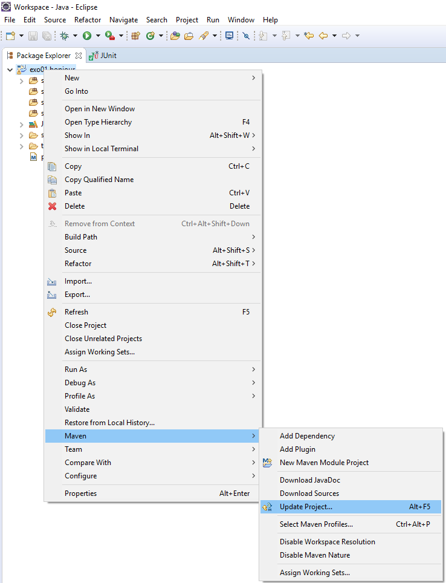
Ensuite, faites un clic droit sur votre fichier pom.xml puis Run As - Maven Build, tapez package dans la zone Goals (celle qui a le focus à l'ouverture de la fenêtre).
Vérifiez que tout compile (pas de [ERROR] dans la console Maven et un BUILD SUCCESS à la fin).
Maintenant, faites un clic droit sur le projet, puis Properties (tout en bas)
Dans l'onglet Targeted Runtime, cochez votre version de Tomcat.
Il y a déjà du code dans le projet que vous récupérez.
Allez dans Java Resources/src/main/java.
Dans le package fr.banque vous trouverez tout ce qui touche aux objets entités. Ce sont des objets qui représentent les données en base. 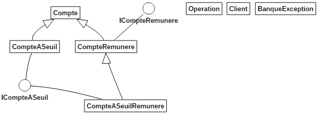
Dans le package fr.bd vous trouverez la classe AccesBD. 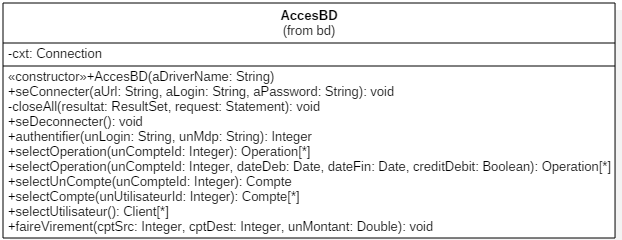 Son rôle est un mixte entre DAO et services métiers, elles portent toute l'intelligence du code.
Exemple d'utilisation d'AccesBD :
public static void main(String[] args) {
final String dbDriver = "com.mysql.jdbc.Driver";
final String dbUrl = "jdbc:mysql://localhost/banque?useSSL=false";
final String dbLogin = "root";
final String dbPwd = "";
AccesBD bd = null;
try {
bd = new AccesBD(dbDriver);
bd.seConnecter(dbUrl, dbLogin, dbPwd);
// En Mapping maintenant
System.out.println("\nMapping Objet");
List<Client> lClient = bd.selectUtilisateur();
for(Client client : lClient) {
System.out.println(client);
}
} catch (SQLException e) {
e.printStackTrace();
} finally {
if (bd != null) {
bd.seDeconnecter();
}
}
}
Des classes Servlet sont déjà présentent dans le package fr.web, mais elles ne font rien pour le moment.
Afin de pouvoir tester votre projet via un navigateur Web, vous devrez créer une instance de serveur et y déployer votre projet.
En perspective Java EE, allez sur l'onglet Server (en bas) 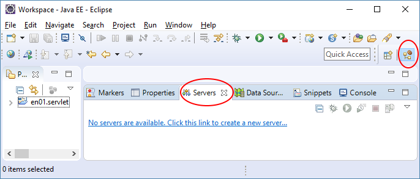
Sélectionnez votre serveur, puis faites Next 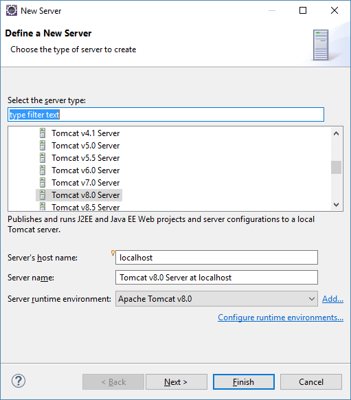
Ajoutez votre projet au serveur en le sélectionnant et en cliquant sur le bouton Add 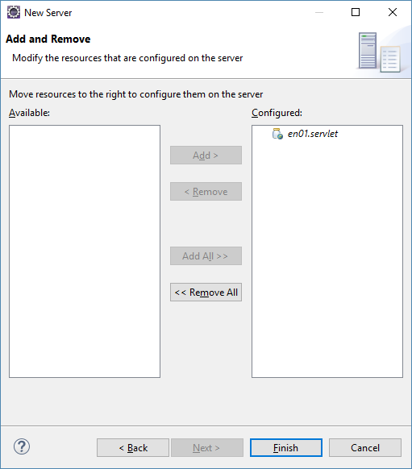
Pour démarrer le serveur, vous pouvez faire un clic droit dessus puis Start, vous pouvez aussi vous positionner sur un élément Web (Servlet, JSP, page HTML) et faire un clic droit puis Run As - Run on server
Lisez toujours attentivement ce que vous raconte Tomcat quand il démarre.
Dans un premier temps, nous allons coder de manière simplifiée et ne réaliser que des Servlets.
Editez la classe fr.web.ServletClient.
On souhaite fabriquer une page web qui représente tous les clients. Dans la méthode service ou doGet ou doPost vous allez écrire le code qui va
Notez que l'accès à la base de données se fera par le biais de la classe fr.banque.AccesBD. Lisez sa documentation pour voir comment elle fonctionne.
Notez aussi que dans le flux de retour on a un formulaire qui doit nous permettre de voir les comptes du client, il contient donc un paramètre qui va contenir l'id du client.
Editez la classe servlet fr.web.ServletCompte.
On souhaite fabriquer une page web qui représente tous les comptes d'un client donné. Dans la méthode service ou doGet ou doPost vous allez écrire le code qui va
L'accès à la base de données se fera toujours par le biais de la classe fr.banque.AccesBD.
Attention : vous êtes en polymorphisme sur la manipulation de la liste des comptes. N'oubliez pas qu'il existe plusieurs types de compte.
Question : peut-on trouver un attribut à cette servlet ?
Question : peut-on trouver un héritage à cette servlet ?
Pour tester votre code, créer une instance de serveur puis ajoutez votre projet comme application à y déployer.
Lancez votre serveur, puis allez sur l'URL qui caractérise votre application : http://localhost:8080/NomDeVotreContext/NomDeMappingDeVotreServlet
Rappels :
Ce qui peut donner http://localhost:8080/en01.servlet/ServletClient.